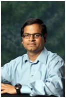

Keynote Speakers
V.Ramgopal Rao, Fellow IEEE Indian Institute of Technology (IIT) Delhi, Hauz Khas, New Delhi, India Email: rrao@iitd.ac.in, Web: http://www.ee.iitb.ac.in/~rrao/ Date: 17th December 2018 Time: 9:00-10:00 IST Abstract : IoT based sensor networks are expected to see a massive growth the world over in the next few years. However, the poor infrastructure facilities available in many of the developing countries and the extreme low cost requirementsthese technologies are expected to meet pose a challenge for an increased penetration of these technologies in such environments. This calls for an innovation on the technology front in addition to developing a novel business model for their penetration. The requirement for IoT sensor platforms in these economies is however very critical in solving the needs of security, healthcare, agriculture, water and air quality monitoring. In this talk, we will discuss some of these challenges and opportunities for development of IoT based sensor solutions for resource constrained environments.
Title : Sensor Platforms for Providing Affordable IoT Solutions to the Developing World
We will show the need for a massive deployment of such technologies, their calibration, power supply and network challenges as well as the user interface requirements keeping in mind the socio-economic conditions of the end users. In order to achieve some of these goals, wedemonstrate novel sensor integration methodologieswhere completely diverse platforms, materials and approaches are brought together in order to realize the desired system functionality at the targeted price points. The talk also discusses how nano-scale materials and phenomenacan help improve the sensitivity of sensor platforms for detection of sub ppb levels of analytes for specific sensing applications.
Biography : Prof. V. Ramgopal Rao is currently the Director, IIT Delhi. Before joining IIT Delhi as the Director in April 2016, Dr. Rao served as a P. K. Kelkar Chair Professor for Nanotechnology in the Department of Electrical Engineering at IIT Bombay. Dr. Rao has over 450 research publications in the area of nano-scale devices &sensors and is an inventor on over 40 patents and patent applications, with multiple license transfers to industries. Prof. Rao is a co-founder of two deep technology startups at IIT Bombay which are developing products of relevance to the society. Dr. Rao is a Fellow of IEEE, a Fellow of the Indian National Academy of Engineering, the Indian Academy of Sciences, the National Academy of Sciences, and the Indian National Science Academy.
Prof. Rao’s work is recognized with many awards and honors in the country and abroad. He is a recipient of the Shanti Swarup Bhatnagar Prize in Engineering Sciences (the highest recognition for scientists in the country) in 2005 and the Infosys Prize in 2013. Dr. Rao also received the Swarnajayanti Fellowship award from the Department of Science & Technology, IBM Faculty award, Best Research award from the Intel Asia Academic Forum, TechnoMentor award from the Indian Semiconductor Association among many others. Prof. Rao was an Editor for the IEEE Transactions on Electron Devices during 2003-2012 for the CMOS Devices and Technology area and currently serves on the Editorial boards of other journals. He is a Distinguished Lecturer, IEEE Electron Devices Society and interacts closely with many semiconductor industries both in India and abroad.
Dr. Rao served as the Chairman, IEEE AP/ED Bombay Chapter and as a Vice-Chairman, IEEE Asia Pacific Regions/Chapters sub-committee for two terms. He was the first elected Chairman for the India section, American Nano Society during 2013-2015.
.
Abstract: We often observe the word “smart” being used with many devices, systems, and bigger physical entities. For example, smart phone, smart car, smart healthcare, smart city, are being used in various contexts. So, question arise what is “smart”? Does smart mean compact? Does smart mean efficient? Does smart mean fast? Does smart mean intelligent? What is it? Probably the adjective “smart” being used in various contexts for various reasons? The objective of this talk to discuss “smartness” with specific emphasis to consumer electronics which are essentially electronic systems. A combination of various forms of hardware, system software, and applications software, make the realization of such a smart electronic system possible. What additional components an electronic system should have to be called “smart”? What characteristics an electronic system should have to be called “smart”? These aspects of electronic system will be discussed in this talk.  Saraju P. Mohanty Department of Computer Science and Engineering University of North Texas, Denton, TX 76207, USA. Homepage: http://www.smohanty.org/ Email: saraju.mohanty@unt.edu Date: 17th December 2018 Time: 13:30-14:30 IST
Title :Smart Electronic Systems
In a specific thought, smart electronic systems are envisioned to be Energy-Smart, Security-Smart, and Response-Smart. Energy-Smart ensures that energy consumption of electronics is optimal for longer battery life and smaller energy bills. Security-Smart handles the security, privacy, or protection of electronic systems as well as that of the data or media that these systems capture, process, or store. Response-Smart refers to accurate sensing, intelligent processing to retrieve knowledge or information from the data, and fast actuation or response based on the information. There is a need for new hardware, firmware, middleware, and software research that interacts with each other for efficient realization of smart electronic systems.
Biography : Dr. Saraju P. Mohanty is a Professor at the University of North Texas. Prof. Mohanty’s research is in “Smart Electronic Systems” which has been funded by National Science Foundations, Semiconductor Research Corporation, US Air Force, and Indo-US Technology Forum. He received IEEE-CS-TCVLSI Distinguished Leadership Award in 2018 for outstanding services to the IEEE, and to the VLSI research community. He has been recognized as a IEEE Distinguished Lecturer by the Consumer Electronics Society (CESoc) in 2017. He was conferred the Glorious India Award in 2017 for his exemplary contributions to the discipline. He received Society for Technical Communication (STC) 2017 Award of Merit for his outstanding contributions to IEEE Consumer Electronics Magazine. He was the recipient of 2016 PROSE Award for best Textbook in Physical Sciences & Mathematics from the Association of American Publishers for his Mixed-Signal System Design book published by McGraw-Hill in 2015. He was conferred 2016-17 UNT Toulouse Scholars Award for sustained excellent scholarship and teaching achievements. He is the EiC of the IEEE Consumer Electronics Magazine (CEM). He serves as the Chair of Technical Committee on VLSI, IEEE Computer Society. He has received 4 best paper awards and has delivered multiple keynote talks at various International Conferences. He authored 280 research articles, 3 books, and invented 4 US patents. His Google Scholar h-index is 29 and i10-index is 89. More about his biography, research, education, and outreach activities can be obtained from his website: http://www.smohanty.org.
Abstract: The Internet-of-Things (IoT) regime arguably began about a decade back, when the number of connected computing devices exceeded the human population. Today, our environment includes billions of connected electronic systems, coordinating and communicating to implement applications of unprecedented scale and diversity, ranging from intelligent homes, smart biomedical devices, self-driving automobiles, to smart cities. The trend is towards even more proliferation of these systems with estimates of trillions within the next fifteen years, representing the fastest growth for any sector at any time in the human history. Given the scale of computing in the IoT regime, it is crucial to our well being to ensure that participating systems operate (or process, store, and communicate information) safely, reliably, securely, and as intended. Unfortunately, traditional techniques for system architecture and design to address these requirements are often inadequate for the needs of the new era. System architecture challenges arise from complex interplay of a variety of constraints from reliability, energy-efficiency, security, software enablement, validation, in-field configurability, and many others.
Dr. Sandip Ray, Date: 18th December 2018 Time: 8:45-9:45 IST
Title: Architecting Internet-of-Things Systems: Impending Challenges and Integrative Solutions
Department of Electrical and Computer Engineering, University of Florida
To address these challenges, fundamentally new approaches are necessary that cross-cut several traditional areas of computer science and engineering including computer architecture, hardware/software co-design, verification, and machine learning, in addition to drawing ideas from areas as diverse as mechanical engineering, biomedical engineering, and device physics.
In this talk, we will look at architectural and design challenges and approaches in ensuring efficient, reliable and trustworthy behavior of computing systems in the IoT regime. IoT system architecture in current industrial practice is a highly complex activity, spanning consideration for the entire design cycle and involving a variety of stakeholders with conflicting requirements. We will discuss unique constraints induced by representative application domains such as automotive and biomedical systems. The talk will cover the current state of practice in addressing these constraints, their limitations, and some important research initiatives taken to address those limitations. We will present a novel, flexible approach to system architecture for IoT and automotive systems that facilitates comprehension and analysis of trade-offs among various stakeholder interests. The talk will give a flavor of the nature of the cross-cutting, collaborative research necessary to develop high-assurance computing devices in the IoT era.
Biography: Dr Sandip Ray is an Endowed Professor at the Department of Electrical and Computer Engineering, University of Florida, affiliated to the Warren B. Nelms Institute for Connected World. His research involves developing correct, dependable, secure, and trustworthy computing through cooperation of specification, synthesis, architecture and validation technologies. His research targets next-generation computing applications, including autonomous automotive systems, smart homes, intelligent implants, etc. Before joining University of Florida, Dr. Ray was a Senior Principal Engineer at NXP Semiconductors, where he led the R&D on security architecture and validation for automotive and Internet-of-Things applications. Prior to that, he was a Research Scientist at Intel Strategic CAD Labs, where he led research on pre-silicon and post-silicon validation of security and functional correctness of next-generation Intel System-on-Chip (SoC) designs, design-for-security and design-for-debug architectures, CAD tools, and specifications for SoC design requirements. Apart from NXP and Intel, his work also found applications in AMD, Galois, IBM, and Rockwell Collins. Prior to joining the industry, Dr. Ray was a Research Scientist at University of Texas at Austin, where he led sponsored research projects from DARPA, SRC, and National Science Foundation.
Dr. Ray is the author of three books and over 60 publications in peer-reviewed premier international journals and conferences. He served as guest editors for an IEEE Transactions on Multi-Scale Systems (TMSCS) special issue on Wearables, Implants, and Internet-of-Things, as well as special issues of ACM Transactions on Design Automation of Electronic Systems (TODAES) and Springer Journal on Electronic Testing Theory and Applications (JETTA). He has received several recognitions/awards from Intel for his extensive contribution in the fields of system architecture, post-silicon validation, and hardware/software co-design. He has given more than 50 invited, tutorial, and keynote presentations at several international forums on security, validation, and energy challenges in the IoT regime. During his tenure in industry, Dr. Ray served as Intel and NXP representative in Semiconductor Research Consortium (SRC) technical advisory board, and as semiconductor industry representative on trustworthy systems to the Semiconductor Industry Association (SIA). He has served as a program committee member for more than 50 international meetings and conferences, and as program chair for Formal Methods in Computer-Aided Design (FMCAD). He currently serves as an Associate Editor for IEEE TMSCS and Springer Journal on Hardware and Systems Security. He has a Ph.D. from University of Texas at Austin and is a Senior Member of IEEE.